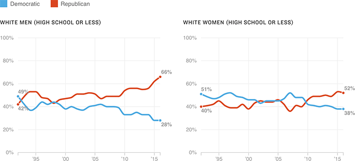

White, Non-College Voters Have Fled The Democratic Party
Among registered voters, two-thirds of white men with a high school diploma or less identify as Republican or Republican-leaning, up by more than 20 points since the early 1990s, according to the Pew Research Center.
